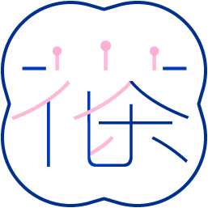

scroll down
꽃차는 안전성을 인정받은 꽃에 대해서만 차(茶) 용도로 사용할 수 있다.시중에 판매하는 꽃 제품이라고 안심해서는 안된다.
식약처는 식품원료로 사용할 수 없는 꽃을 꽃차 제품으로 만들어 인터넷을 통해 판매하는 업체 46곳에 대한 기획단속을 실시한 결과,
식품에 사용할 수 없는 ‘꽃’과 ‘꽃의 부위’ 등을 마시는 차(茶)로 만들어 판매하는 등 식품위생법령을 위반한 업체 20곳을 적발하고 행정처분 및 수사의뢰 했다.
먹을 수 있는 꽃인지 확인하는 방법은 식품안전나라 홈페이지 > 전문정보 > 기준규격정보에서 확인이 가능하다.
식품에 사용할 수 있는 꽃은 총 293종이며 이 중 꽃을 포함하여 식물 전체를 사용할 수 있는 식물은 109종,
식물의 지상부만 사용할 수 있는 식물은 7종, 꽃만 사용이 가능하다.